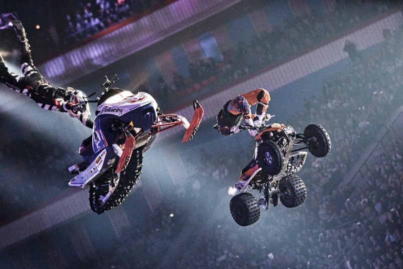

Наша страна
ЦИК опубликовал проект постановления по итогам выборов 2018
Действующий президент России Владимир Путин одержал победу на нынешних выборах главы государства с результатом 76,69% голосов по итогам обработки 100% протоколов участковых избирательных комиссий, говорится в проекте постановления Центризбиркома, сообщает РИА «Новости».
За Путина проголосовали 56 миллионов 430 тысяч 712 избирателей.
Павел Грудинин от КПРФ занял второе место на выборах президента с 11,77%. Лидер ЛДПР Владимир Жириновский занял третье место на нынешних выборах президента России с результатом 5,65% голосов. Ксения Собчак, участвовавшая в выборах от партии «Гражданская инициатива», стала четвертой, набрав 1,68% голосов.
Явка избирателей на выборах президента составила 67,54%.
19.03.2018
Главные праздники и события в Москве в 2018 году
09 января — 15 января — Фестиваль «Возвращение»
Вот уже 20 лет в январе самые знаменитые музыканты мира собираются в Москве на фестивале «Возвращение», чтобы сыграть несколько шедевров камерной музыки в зале Московской консерватории им. П. И. Чайковского. Это могут быть редко исполняемые, новаторские или известные произведения в новом прочтении.
 01 апреля — Фестиваль экстремальных видов спорта «Прорыв»
Главное экстремальное спортивное шоу в России. Именно так, ни больше ни меньше, организаторы называют фестиваль «Прорыв», проходящий на крытой арене спорткомплекса «Олимпийский».
20 мая — Ночь музеев в Москве
С 2007 года в Москве ежегодно в середине мая проходит акция «Ночь в музее». Цель акции — привлечь внимание к музейным коллекциям, повысить интерес к посещению музеев в молодежной среде, сделать поход в музей занимательной формой проведения досуга.
21 мая — Венский бал в Москве
Если вы мечтаете принять участие в Венском бале и на один день превратиться в настоящую принцессу, то для этого совсем необязательно ехать в далекую Австрию. Мечту можно воплотить в реальность и в России. Венский бал в Москве — событие грандиозное.
22 июня — 29 июня — Московский кинофестиваль
Второй старейший смотр фильмов планеты после Венецианского, Московский кинофестиваль — одно из самых любимых синефилами, туристами и столичными жителями событий лета. Кинофестиваль проходит на протяжении десяти дней в нескольких исторических кинотеатрах Москвы.
25 июня — Московская Велоночь
Велоночь — уникальное событие, которое соединяет воедино искусство и спорт. Этот ежегодный культурный фестиваль связывает между собой не только разные районы Москвы, но и интеллектуальные, авиационные и спортивные пласты истории России и мира: мероприятие проходит во многих странах.
Международный авиационно-космический салон МАКС
МАКС — один из самых заметных авиафорумов в мире, несмотря на то, что посвящён он преимущественно отечественной авиатехнике. Официальным патроном МАКСа является Президент РФ. Соответственно, организация и общее положение дел на этом авиасалоне обычно самые что ни на есть достойные.
29 июля — Фестиваль «Пикник Афиши»
Музыкальный фестиваль «Пикник Афиши» уже давно вышел за рамки именно музыкального мероприятия. Оно и немудрено: на одном из крупнейших событий СНГ в свое время можно было встретить самых разных типажей — и заторможенно-жизнерадостных дредачей и всяческую интересную молодежь.
26 — 03 сентября — Фестиваль «Спасская башня»
Армия — это не только солдаты, но и музыканты. И красочный фестиваль «Спасская башня», проходящий ежегодно на стыке августа и сентября в Москве, представляет развлекательную составляющую вооруженных сил во всем ее притягательном блеске.
15 сентября — Большой Екатерининский бал
Большой Екатерининский бал в Москве — это ежегодный праздник, на котором старинный и, казалось бы, давно позабытый 18 век возрождается во всем своем блеске красоты, остроумия и пышности. Не случайно это масштабное событие проходит в атмосфере светского вечера именно екатерининских времен.
11.12.2017

Похожие новости
Новости культуры
В московском метро запустили тематический поезд "Малый театр" [...]
Владимир Путин призвал создать в регионах России сеть культурных центров [...]
Другие новости
MMA
Хабиб vs Фергюсон: как это будет [...]
Ронда Раузи: «Было время, когда я просто искала способ достойно уйти из UFC»[...]
Наука
Ученые создали рыбу-робота для изучения подводного мира [...]
Ученые открыли новую форму света [...]
Футбол
В «Зените» пообещали «всех рвать» [...]
Де Хеа попросил продать его в «Реал» [...]
Биатлон
Тренер Гросс сменит сборную России по биатлону на австрийскую команду [...]
Чемпионка мира Юрьева об основной проблеме в российском биатлоне [...]
Новости IT-индустрии
Samsung принимает заказы от производителей систем-майнеров [...]
Nougat стала самой популярной версией Android [...]
Кибербезопасность
Злоумышленники пытаются использовать уязвимости процессоров [...]
AMD Zen 2 не будет иметь уязвимостей Spectre [...]